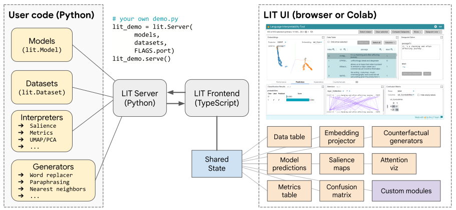

LIT Python API#
Design Overview#
LIT is a modular system, comprising a collection of backend components (written in Python) and frontend modules (written in TypeScript). Most users will develop against the Python API, which is documented below and allows LIT to be extended with custom models, datasets, metrics, counterfactual generators, and more. The LIT server and components are provided as a library which users can use through their own demo binaries or via Colab.
The components can also be used as regular Python classes without starting a server; see below for details.

The LIT backend serves models, data, and interpretability components, each of which is a Python class implementing a minimal API and relying on the spec system to detect fields and verify compatibility. The server is stateless, but implements a caching layer for model predictions - this simplifies component design and allows interactive use of large models like BERT or T5.
The frontend is a stateful single-page app, built using Lit[1] for modularity and MobX for state management. It consists of a core UI framework, a set of shared “services” which manage persistent state, and a set of independent modules which render visualizations and support user interaction. For more details, see the UI guide and the frontend developer guide.
Adding Models and Data#
To run LIT with your own models and data, you can create a custom demo.py
script that passes these to the LIT server. For example:
def main(_):
# MulitiNLIData implements the Dataset API
datasets = {
'mnli_matched': MultiNLIData('/path/to/dev_matched.tsv'),
'mnli_mismatched': MultiNLIData('/path/to/dev_mismatched.tsv'),
}
# NLIModel implements the Model API
models = {
'model_foo': NLIModel('/path/to/model/foo/files'),
'model_bar': NLIModel('/path/to/model/bar/files'),
}
lit_demo = lit_nlp.dev_server.Server(models, datasets, port=4321)
lit_demo.serve()
if __name__ == '__main__':
main()
Conceptually, a dataset is just a list of examples and a model is just a
function that takes examples and returns predictions. The Dataset
and Model classes implement this, and provide metadata (see the
type system) to describe themselves to other components.
For pre-built demo.py examples, check out
https://github.com/PAIR-code/lit/tree/main/lit_nlp/examples
Validating Models and Data#
Datasets and models can optionally be validated by LIT to ensure that dataset examples match their spec and that model output values match their spec. This can be very helpful during development of new model and dataset wrappers to ensure correct behavior in LIT.
At LIT server startup, the validate flag can be used to enable validation.
There are three modes:
--validate=firstwill check the first example in each dataset.--validate=samplewill validate a sample of 5% of each dataset.--validate=allwill run validation on all examples from all datasets.
Additionally, if using LIT datasets and models outside of the LIT server,
validation can be called directly through the
validation module.
Datasets#
Datasets (Dataset) are
just a list of examples, with associated type information following LIT’s
type system.
spec()should return a flat dict that describes the fields in each exampleself._examplesshould be a list of flat dicts
LIT operates on all examples loaded in the datasets you include in your LIT server, therefore you should take care to use dataset sizes that can fit into memory on your backend server and can be displayed in the browser.
NOTE: See the FAQ for more details on dataset size limitations.
Implementations should subclass
Dataset. Usually this
is just a few lines of code - for example, the following is a complete
implementation for the MultiNLI
dataset:
class MultiNLIData(Dataset):
"""Loader for MultiNLI development set."""
NLI_LABELS = ['entailment', 'neutral', 'contradiction']
def __init__(self, path: str):
# Read the eval set from a .tsv file as distributed with the GLUE benchmark.
df = pandas.read_csv(path, sep='\t')
# Store as a list of dicts, conforming to self.spec()
self._examples = [{
'premise': row['sentence1'],
'hypothesis': row['sentence2'],
'label': row['gold_label'],
'genre': row['genre'],
} for _, row in df.iterrows()]
def spec(self) -> types.Spec:
return {
'premise': lit_types.TextSegment(),
'hypothesis': lit_types.TextSegment(),
'label': lit_types.CategoryLabel(vocab=self.NLI_LABELS),
# We can include additional fields, which don't have to be used by the model.
'genre': lit_types.CategoryLabel(),
}
In this example, all four fields (premise, hypothesis, label, and genre) have string values, but the semantic types tell LIT a bit more about how to interpret them:
premiseandhypothesisshould be treated as natural-language text (TextSegment)labelshould be treated as a categorical feature (CategoryLabel) with a fixed, known set of possible values (vocab=self.NLI_LABELS)genreshould be treated as a categorical feature, but with an unknown or open set of values.
This implementation uses Pandas to read a TSV file, but you can also use
services like TensorFlow Datasets -
simply wrap them in your __init__() function.
Note that you can freely add additional features - such as genre in the
example above - which the model may not be aware of. The LIT UI will recognize
these features for slicing, binning, etc., and they will also be available to
interpretation components such as custom metrics.
Transformations#
The Dataset class also supports a limited set of transformations, similar to
TensorFlow’s
tf.data.Dataset
but more limited in scope and aimed at supporting quick iteration:
Dataset.slice[start:step:end]will return a newDatasetwith the same spec and a slice of the datapoints.Dataset.sample(n, seed=42)will return a newDatasetwith the same spec and a random sample of the datapoints.Dataset.remap(field_map: dict[str, str])will return a newDatasetwith renamed fields in both the examples and spec.
The latter is a shortcut to use datasets matching one model with another; for
example, a dataset with a "document" field can be used with a model expecting
a "text" input via Dataset.remap({"document": "text"}).[2]
Models#
Models (Model) are
functions which take inputs and produce outputs, with associated type
information following LIT’s type system. The core API consists
of three methods:
input_spec()should return a flat dict that describes necessary input fieldsoutput_spec()should return a flat dict that describes the model’s predictions and any additional outputspredict()should take a sequence of inputs (satisfyinginput_spec()) and yields a parallel sequence of outputs matchingoutput_spec().
Implementations should subclass
Model. An example for
MultiNLI might look something like:
class NLIModel(Model):
"""Wrapper for a Natural Language Inference model."""
NLI_LABELS = ['entailment', 'neutral', 'contradiction']
def __init__(self, model_path: str, **kw):
# Load the model into memory so we're ready for interactive use.
self._model = _load_my_model(model_path, **kw)
##
# LIT API implementations
def predict(self, inputs: Iterable[Input]) -> Iterable[Preds]:
"""Predict on a stream of examples."""
examples = [self._model.convert_dict_input(d) for d in inputs] # any custom preprocessing
return self._model.predict_examples(examples) # returns a dict for each input
def input_spec(self) -> types.Spec:
"""Describe the inputs to the model."""
return {
'premise': lit_types.TextSegment(),
'hypothesis': lit_types.TextSegment(),
}
def output_spec(self) -> types.Spec:
"""Describe the model outputs."""
return {
# The 'parent' keyword tells LIT where to look for gold labels when computing metrics.
'probas': lit_types.MulticlassPreds(vocab=NLI_LABELS, parent='label'),
}
Unlike the dataset example, this model implementation is incomplete - you’ll
need to customize predict() accordingly with any pre- or post-processing
needed, such as tokenization.
Many deep learning models support a batched prediction behavior. Thus, we
provide the BatchedModel class that implements simple batching. Users of this
class must implement the predict_minibatch() function, which should convert
a Sequence of JsonDict objects to the appropriate batch representation
(typically, a Mapping of strings to aligned Sequences or Tensors) before
calling the model. Optionally, you may want to override the
max_minibatch_size() function, which determines the batch size.
Note: there are a few additional methods in the model API - see
Model for details.
If your model is on a remote server, consider using the BatchedRemoteModel
base class, which implements parallel batched requests using a thread pool.
Adding more outputs#
The above example defined a black-box model, with predictions but no access to
internals. If we want a richer view into the model’s behavior, we can add
additional return fields corresponding to hidden-state activations, gradients,
word embeddings, attention, or more. For example, a BERT-based model with
several such features might have the following output_spec():
def output_spec(self) -> types.Spec:
"""Describe the model outputs."""
return {
# The 'parent' keyword tells LIT where to look for gold labels when computing metrics.
'probas': lit_types.MulticlassPreds(vocab=NLI_LABELS, parent='label'),
# This model returns two different embeddings (activation vectors), but you can easily add more.
'output_embs': lit_types.Embeddings(), # from [CLS] token at top layer
'mean_word_embs': lit_types.Embeddings(), # mean of input word embeddings
# In LIT, we treat tokens as another model output. There can be more than one,
# and the 'parent' field describes which input segment they correspond to.
'premise_tokens': lit_types.Tokens(parent='premise'),
'hypothesis_tokens': lit_types.Tokens(parent='hypothesis'),
# Gradients are also returned by the model; 'align' here references a Tokens field.
'premise_grad': lit_types.TokenGradients(align='premise_tokens'),
'hypothesis_grad': lit_types.TokenGradients(align='hypothesis_tokens'),
# Similarly, attention references a token field, but here we want the model's full "internal"
# tokenization, which might be something like: [START] foo bar baz [SEP] spam eggs [END]
'tokens': lit_types.Tokens(),
'attention_layer0': lit_types.AttentionHeads(align=['tokens', 'tokens']),
'attention_layer1': lit_types.AttentionHeads(align=['tokens', 'tokens']),
'attention_layer2': lit_types.AttentionHeads(align=['tokens', 'tokens']),
# ...and so on. Since the spec is just a dictionary of dataclasses, you can populate it
# in a loop if you have many similar fields.
}
The predict() function would return, for each example, additional dict entries
corresponding to each of these fields.
Note: Because tokenization is often tightly coupled with the model code, we
treat it as an intermediate state on the same level as embeddings or attention,
and thus return Tokens as a field in the model output. This also allows
models to expose different tokenizations for different inputs, such as
premise_tokens and hypothesis_tokens above.
LIT components and frontend modules will automatically detect these spec fields and use them to support additional interpretation methods, such as the embedding projector or gradient-based salience maps.
You can also implement multi-headed models this way: simply add additional
output fields for each prediction (such as another MulticlassPreds), and
they’ll be automatically detected.
See the type system documentation for more details on available types and their semantics.
Optional inputs#
By default, LIT treats input_spec fields as required. However, this can be set
to false if you wish to define optional model inputs. For example, a model that
can accept pre-tokenized inputs might have the following spec:
def input_spec(self) -> types.Spec:
return {
"text": lit_types.TextSegment(),
"tokens": lit_types.Tokens(parent='text', required=False),
}
And in the model’s predict(), you would have logic to use these and bypass the
tokenizer:
def predict(self, inputs: Iterable[Input]) -> Iterable[Preds]:
input_tokens = [ex.get('tokens') or self.tokenizer.tokenize(ex['text'])
for ex in inputs]
# ...rest of your predict logic...
required=False can also be used for label fields (such as "label": lit_types.CategoryLabel(required=False)), though these can also be omitted from
the input spec entirely if they are not needed to compute model outputs.
Interpretation Components#
Backend interpretation components include metrics, salience maps, visualization aids like UMAP, and counterfactual generator plug-ins.
Most such components implement the
Interpreter API.
Conceptually, this is any function that takes a set of datapoints and a model,
and produces some output.[3] For example,
local gradient-based salience (GradientNorm)
processes the TokenGradients and Tokens returned by a model and produces a
list of scores for each token. The Integrated Gradients saliency method
additionally requires a TokenEmbeddings input and corresponding output, as
well as a label field Target to pin the gradient target to the same class as
an input and corresponding output. See the
GLUE models class
for an example of these spec requirements.
The core API involves implementing the run() method:
def run(self,
inputs: list[JsonDict],
model: lit_model.Model,
dataset: lit_dataset.Dataset,
model_outputs: Optional[list[JsonDict]] = None,
config: Optional[JsonDict] = None):
# config is any runtime options to this component, such as a threshold for
# (binary) classification metrics.
Output from an interpreter component is unconstrained; it’s up to the frontend component requesting it to process the output correctly. In particular, some components (such as salience maps) may operate on each example independently, similar to model predictions, while others (such as metrics) may produce aggregate summaries of the input set.
Interpreters are also responsible for verifying compatibility by reading the model and dataset specs; these are also used to determine what fields to operate on. A typical implementation just loops over the relevant specs. For example, for simple gradient-based salience we might have:
def find_fields(self, output_spec: Spec) -> list[str]:
# Find TokenGradients fields
grad_fields = utils.find_spec_keys(output_spec, types.TokenGradients)
# Check that these are aligned to Tokens fields
for f in grad_fields:
tokens_field = output_spec[f].align # pytype: disable=attribute-error
assert tokens_field in output_spec
assert isinstance(output_spec[tokens_field], types.Tokens)
return grad_fields
def run(self,
inputs: list[JsonDict],
model: lit_model.Model,
dataset: lit_dataset.Dataset,
model_outputs: Optional[list[JsonDict]] = None,
config: Optional[JsonDict] = None) -> Optional[list[JsonDict]]:
"""Run this component, given a model and input(s)."""
# Find gradient fields to interpret
output_spec = model.output_spec()
grad_fields = self.find_fields(output_spec)
logging.info('Found fields for gradient attribution: %s', str(grad_fields))
if len(grad_fields) == 0: # pylint: disable=g-explicit-length-test
return None
# do rest of the work to create the salience maps for each available field
# return a dtypes.TokenSalience for each input, which has a list of
# tokens (from the model) and their associated scores.
This design adds some code overhead to interpretation components, but the benefit is flexibility - Python can be used to specify complex dependencies between fields, and multiple outputs can be easily supported in a loop.
Metrics#
For metrics, the
SimpleMetrics
class implements the spec-matching and input-unpacking logic to satisfy the
general Interpreter API. A subclass of SimpleMetrics should implement an
is_compatible() method and a compute() method, which is called on compatible
(prediction, label) pairs and returns a dict of named score fields. For example:
class RegressionMetrics(SimpleMetrics):
"""Standard regression metrics."""
def is_compatible(self, field_spec: types.LitType) -> bool:
"""Return true if compatible with this field."""
return isinstance(field_spec, types.RegressionScore)
def compute(self,
labels: Sequence[float],
preds: Sequence[float],
label_spec: types.Scalar,
pred_spec: types.RegressionScore,
config: Optional[JsonDict] = None) -> dict[str, float]:
"""Compute metric(s) between labels and predictions."""
del config
mse = sklearn_metrics.mean_squared_error(labels, preds)
pearsonr = scipy_stats.pearsonr(labels, preds)[0]
spearmanr = scipy_stats.spearmanr(labels, preds)[0]
return {'mse': mse, 'pearsonr': pearsonr, 'spearmanr': spearmanr}
The implementation of SimpleMetrics.run() uses the parent key (see
type system) in fields of the model’s output spec to find the
appropriate input fields to compare against, and calls compute() accordingly
on the unpacked values.
Generators#
Conceptually, a generator is just an interpreter that returns new input examples. These may depend on the input only, as for techniques such as back- translation, or can involve feedback from the model, such as for adversarial attacks.
The core generator API is:
class Generator(Interpreter):
"""Base class for LIT generators."""
def generate_all(self,
inputs: list[JsonDict],
model: lit_model.Model,
dataset: lit_dataset.Dataset,
config: Optional[JsonDict] = None) -> list[list[JsonDict]]:
"""Run generation on a set of inputs.
Args:
inputs: sequence of inputs, following model.input_spec()
model: optional model to use to generate new examples.
dataset: optional dataset which the current examples belong to.
config: optional runtime config.
Returns:
list of list of new generated inputs, following model.input_spec()
"""
Where the output is a list of lists: a set of generated examples for each input.
For convenience, there is also a generate() method which takes a single
example and returns a single list; we provide the more general generate_all()
API to support model-based generators (such as back-translation) which benefit
from batched requests.
As with other interpreter components, a generator can take custom arguments
through config, such as the list of substitutions for the
word replacer.
Backtranslator Generator#
The backtranslator generator translates text segment inputs into foreign languages and back to the source language in order to create paraphrases. It relies on the Google Cloud Translate API to perform those translations. To use it, you must have a Google Cloud project and set up Cloud Translation as described at https://cloud.google.com/translate/docs/setup. Then, download your application credentials file locally and set the GOOGLE_APPLICATION_CREDENTIALS environment variable to point to that file. With that environment variable set to the correct path, LIT can make use of the backtranlator generator if you pass it as a generator in the Server constructor.
Configuration UI#
Interpreter components support an optional config option to specify run-time
options, such as the number of samples for LIME or the pivot languages for
back-translation. LIT provides a simple DSL to define these options, which will
auto-generate a form on the frontend. The DSL uses the same
type system as used to define data and model outputs, and the
config argument will be passed a dict with the form values.
For example, the following spec:
def config_spec(self) -> types.Spec:
return {
"Pivot languages": types.SparseMultilabel(
vocab=['ar', 'bg', 'de', 'el', 'en', 'es', 'fr', 'hi', 'ru', 'sw',
'th', 'tr', 'ur', 'vi', 'zh'],
default=['de', 'fr']),
"Source language": types.TextSegment(default='en'),
}
will give this form to configure back-translation:
{kind=link}
Currently config_spec() is supported only for generators and salience methods,
though any component can support the config argument to its run() method,
which can be useful if
running outside of the LIT UI.
The following types are supported (see interpreter_controls.ts):
Scalar, which creates a slider for setting a numeric option. You can specify themin_val,max_val,default, andstep, values for the slider through arguments to theScalarconstructor.Boolean(BooleanLitTypein TypeScript), which creates a checkbox, with adefaultvalue to be set in the constructor.CategoryLabel, which creates a dropdown with options specified in thevocabargument.SparseMultilabel, which creates a series of checkboxes for each option specified in thevocabargument.TextSegment, which creates an input text box for string entry, with an optional default value from thedefaultargument.Tokens, which creates an input text box for entry of multiple, comma-separated strings which are parsed into a list of strings to be supplied to the interpreter.SingleFieldMatcher, which acts like aCategoryLabelbut where the vocab is automatically populated by the names of fields from the data or model spec. For example,SingleFieldMatcher(spec='dataset', types=['TextSegment'])will give a dropdown with the names of allTextSegmentfields in the dataset.MultiFieldMatcheris similar toSingleFieldMatcherexcept it gives a set of checkboxes to select one or more matching field names. The returned value inconfigwill be a list of string values.
The field matching controls can be useful for selecting one or more fields to operate on. For example,to choose which input fields to perturb, or which output field of a multi-head model to run an adversarial attack (such as HotFlip) against.
Type System#
LIT passes data around (e.g., between the server and the web app) as flat
records with string keys. In Python types these are Mapping[str, ...] and in
TypeScript types these are {[key: string]: unknown}. LIT serializes these
records to JSON when communicating between the server and the web app client. It
is because of this serialization that we introduced LIT’s type system; LIT needs
a way to communicate how to process and understand the semantics of the shape
and (allowable) values for the records being passed around in
JSON’s more limited type system.
The shape of a record – its specific keys and the types of their values
– is defined by a Spec; a dict[str, LitType]. Each LitType class has
a default property whose type annotation describes the type of the value for
that field in a JSON record. LitTypes are implemented using hierarchical
inheritance; the canonical types can be found in types.py, with
parallel implementations in lit_types.ts.
Conventions#
LIT supports several different “kinds” of Specs (input vs output vs meta,
etc.), and their use in context has specific implications, described
per base class below.
-
.spec() -> Specdescribes the shape of every record in theSequencereturned byDataset.examples()..init_spec() -> Optional[Spec]describes the user-configurable arguments for loading a new instance of thisDatasetclass via the web app’s UI. ReturningNoneor an emptySpecmeans that there is nothing configurable about how thisDatasetis loaded, and it will not show up in the dataset loading section of the web app’s Global Settings.
-
.input_spec() -> Specdescribes the shape required of all records passed into theModel.predict()function via theinputsargument. LIT checks for compatibility between aDatasetand aModelby ensuring thatModel.input_spec()is a subset ofDataset.spec()..output_spec() -> Specdescribes the shape of all records returned by theModel.predict()function..init_spec() -> Optional[Spec]describes the user-configurable arguments for loading a new instance of thisModelclass via the web app’s UI. ReturningNoneor an emptySpecmeans that there is nothing configurable about how thismodelis loaded, and it will not show up in the model loading section of the web app’s Global Settings.
lit_nlp.api.components.[Interpreter | Generator].config_spec() -> Specdescribes the user-configurable parameters for running this component. Returning an emptySpecmeans that this component always processes inputs in the same way..meta_spec() -> Specis essentially unconstrained, but ideally describes the shape of the records returned by this component’s.run()method. Note that thisSpechas different semantics depending on the component type.Interpreter.run()typically returns anIterable[Mapping[str, ...]]of records (i.e., theMapping) with this shape, because each input corresponds to one interpretation. WhereasGenerator.run()typically returns anIterable[Iterable[Mapping[str, ...]]]of records with this shape, because each input may enable the generation of one or more new examples.
lit_nlp.api.components.Metrics.config_spec() -> Specdescribes the user-configurable parameters for running this component. Returning an emptySpecmeans that this component always processes inputs in the same way..meta_spec() -> Specis a slight variation on the traditionSpec; it will always be aMapping[str, MetricResult]describing the single record returned by theMetrics.run()method for each pair of compatible keys in theModel.output_spec()andDataset.spec(). TheMetricResulttype also describes how to interpret the values in each record, e.g., if higher, lower, or numbers closer to zero are better.
Each LitType subclass encapsulates its own semantics (see
types.py), but there are a few conventions all subclasses follow:
The
align=attribute references another field in the same spec and implies that both fields have index-aligned elements. For example,Model.output_spec()may contain'tokens': lit_types.Tokens(...)and'pos': lit_types.SequenceTags(align='tokens'), which references the “tokens” field. This implies that the “pos” field contains a corresponding value for every item in “tokens” and that you can access them with numeric indices. Transitively, this means that usingzip(..., strict=True)(in Python 3.10 and above) will act as a pseudo-validator of this expectation.The
parent=attribute is typically used byLitTypes in aModel.output_spec(), and must be a field in the input spec (i.e. theDataset.spec()) against which this field’s value will be compared. For example, theModel.output_spec()may contain'probas': lit_types.MulticlassPreds(parent='label', ...)and theDataset.spec()may contain'label': lit_types.CategoryLabel(), which means that theDataset’s “label” field contains the ground truth values for that example, and the class prediction in the “probas” field can be compared to this label, e.g., by multi-class metrics.The
vocab=attribute is used to represent the allowable values for that field, such as a set of classes for aMulticlassPredsfield, or the set of labels for aCategoryLabelfield.A field that appears in both the model’s input and output specs is assumed to represent the same value. This pattern is used for model-based input manipulation. For example, a language model might output
'tokens': lit_types.Tokens(...), and accept as (optional) input'tokens': lit_types.Tokens(required=False, ...). An interpretability component could take output from the former, swap one or more tokens (e.g. with[MASK]), and feed them in the corresponding input field to compute masked fills.
Compatibility Checks#
LIT’s type system plays a critical role in ensuring reliability of and
interoperability between the Model, Dataset, Interpreter, Generator, and
Metrics classes:
The Model-Dataset compatibility check ensures that the
Model.input_spec()is a subset of theDataset.spec(). The baseModelclass provides a robust and universal implementation of this check in theis_compatible_with_dataset()API, but you can override this method in yourModelsubclass if you so choose.All
lit_nlp.api.componentsclasses provide anis_compatibleAPI to check their compatibility againstModels andDatasets, as appropriate. For example, theWordReplacergenerator only checks against theDatasetspec because it does not depend on model outputs, whereas theCurvesinterpreter checks theModelandDatasetbecause it needs labeled predictions, and theGradientDotInputinterpreter only checks against theModel.output_spec()because it needs data that only the model can provide.
The LIT web app also uses Spec based compatibility checks. Each TypeScript
module defines a shouldDisplayModule function that
returns true if any active model-dataset pair provides sufficient information
to support the visualization methods encapsulated by that module. If this
function returns false, the module is not displayed in the layout. Note that
this can cause jitter (UI modules appearing, disappearing, reordering, resizing,
etc.) when switching between models or datasets with heterogeneous Specs.
When implementing your own LIT components and modules, you can use
utils.find_spec_keys()
(Python) and
findSpecKeys()
(TypeScript) to identify fields of interest in a Spec. These methods recognize
and respect subclasses. For example,
utils.find_spec_keys(spec, Scalar) will also match any RegressionScore
fields, but utils.find_spec_keys(spec, RegressionScore) will not return all
Scalar fields in the Spec.
Important: Compatibility checks are performed automatically when
building the LitMetadata for an instance of LitApp,
typically by calling dev_server.Serve(). These checks are not performed when
using components in a raw Python context (e.g., Colab, Jupyter, a REPL), as
described below, and it is encouraged
that you call these explicitly to ensure compatibility and avoid chasing red
herrings.
An In-Depth Example#
Consider the following example from the MNLI demo. The
MultiNLI dataset might define the following Spec.
# Dataset.spec()
{
"premise": lit_types.TextSegment(),
"hypothesis": lit_types.TextSegment(),
"label": lit_types.CategoryLabel(
vocab=["entailment", "neutral", "contradiction"]
),
"genre": lit_types.CategoryLabel(),
}
An example record in this Dataset might be:
# dataset.examples[0]
{
"premise": "Buffet and a la carte available.",
"hypothesis": "It has a buffet."
"label": "entailment",
"genre": "travel",
}
A classification model for this task might have the following input_spec() and
output_spec(). Notice that the input spec is a subset of the Dataset.spec(),
thus LIT considers these to be compatible.
# model.input_spec()
{
"premise": lit_types.TextSegment(),
"hypothesis": lit_types.TextSegment(),
}
# model.output_spec()
{
"probas": lit_types.MulticlassPreds(
parent="label",
vocab=["entailment", "neutral", "contradiction"]
),
}
Running this model over the input might yield the following prediction.
# model.predict([dataset.examples[0]])[0]
{
"probas": [0.967, 0.024, 0.009],
}
Passing this input and the prediction to the ClassificationResults interpreter
would yield additional human-readable information as follows.
# classification_results.run(
# dataset.examples[:1], model, dataset, [prediction]
# )[0]
{
"probas": {
"scores": [0.967, 0.024, 0.009],
"predicted_class": "entailment",
"correct": True,
},
}
See the examples for more.
Available types#
The full set of LitTypes is defined in types.py. Numeric types such as Integer and Scalar have predefined ranges that can be overridden using corresponding min_val and max_val attributes as seen here. The different types available in LIT are summarized
in the table below.
Note: Bracket syntax, such as <float>[num_tokens], refers to the shapes of
NumPy arrays where each element inside the brackets is an integer.
Name |
Description |
Value Type |
|---|---|---|
|
Natural language text, untokenized. |
|
|
Untokenized text, generated from a model (such as seq2seq). |
|
|
TextSegment, but interpreted as a URL. |
|
|
Generated TextSegment, but interpreted as a URL (i.e., it maye not be real/is inappropriate as a label). |
|
|
TextSegment, but interpreted as a search query. |
|
|
Opaque string data; ignored by components such as perturbation methods that operate on natural language. |
|
|
Multiple texts, such as a set of references for summarization or MT. |
|
|
Multiple generation candidates, such as beam search output from a seq2seq model. |
|
|
Tokenized text. |
|
|
Predicted tokens and their scores, as from a language model or seq2seq model. |
|
|
Boolean value. |
|
|
Scalar numeric value. |
|
|
Integer, with a default range from -32768 to +32767. value. |
|
|
Image, represented by a base64 encoded string. LIT also provides |
|
|
Scalar value, treated as a regression target or prediction. |
|
|
Scores for one or more reference texts. |
|
|
Categorical label, from open or fixed vocabulary. |
|
|
Multiclass predicted probabilities. |
|
|
Multiple non-exclusive labels, such as a set of attributes. |
|
|
Sparse multi-label predictions, represented as scored candidates. |
|
|
Sequence tags, aligned to tokens. |
|
|
Span labels, aligned to tokens. Each label is (i,j,label). |
|
|
Edge labels, aligned to tokens. This is a general way to represent many structured prediction tasks, such as coreference or SRL. See https://arxiv.org/abs/1905.06316 |
|
|
In-line byte-span annotations, which can span multiple text segments. |
|
|
Fixed-length embeddings or model activations. |
|
|
Gradients with respect to embeddings or model activations. |
|
|
Per-token embeddings or model activations. |
|
|
Gradients with respect to per-token embeddings or model activations. |
|
|
Gradients with respect to image pixels. |
|
|
Attention heads, grouped by layer. |
|
Values can be plain data, NumPy arrays, or custom dataclasses - see dtypes.py for further detail.
Note: Note that String, Boolean and URL types in Python are represented
as StringLitType, BooleanLitType and URLLitType in TypeScript to avoid
naming collisions with protected TypeScript keywords.
Server Configuration#
Some properties of the LIT frontend can be configured from Python as
arguments to dev_server.Server(). These include:
page_title: set a custom page title, such as “Coreference Demo”.canonical_url: set a “canonical” URL (such as a shortlink) that will be used as the base when copying links from the LIT UI.default_layout: set the default UI layout, by name. Seelayout.tsand the section below for available layouts.demo_mode: demo / kiosk mode, which disables some functionality (such as save/load datapoints) which you may not want to expose to untrusted users.inline_doc: a markdown string that will be rendered in a documentation module in the main LIT panel.onboard_start_doc: a markdown string that will be rendered as the first panel of the LIT onboarding splash-screen.onboard_end_doc: a markdown string that will be rendered as the last panel of the LIT onboarding splash-screen.
For detailed documentation, see server_flags.py.
Most Python components (such as Model, Dataset, and Interpreter) also have
a description() method which can be used to specify a human-readable
description or help text that will appear in the UI.
Customizing the Layout#
You can specify custom web app layouts from Python via the layouts= attribute.
The value should be a Mapping[str, LitCanonicalLayout], such as:
LM_LAYOUT = layout.LitCanonicalLayout(
upper={
"Main": [
modules.EmbeddingsModule,
modules.DataTableModule,
modules.DatapointEditorModule,
]
},
lower={
"Predictions": [
modules.LanguageModelPredictionModule,
modules.ConfusionMatrixModule,
],
"Counterfactuals": [modules.GeneratorModule],
},
description="Custom layout for language models.",
)
You can pass this to the server as:
lit_demo = dev_server.Server(
models,
datasets,
# other args...
layouts={"lm": LM_LAYOUT},
**server_flags.get_flags())
return lit_demo.serve()
For a full example, see
lm_demo.py.
You can see the pre-configured layouts provided by LIT, as well as the list of
modules that can be included in your custom layout in
layout.py. A
LitCanonicalLayout can be defined to achieve four different configurations of
the major content areas:
Single-panel: Define only the
upper=parameter.Two-panel, upper/lower: Define the
upper=andlower=parameters.Two-panel, left/right: Define the
left=andupper=parameters; theupper=section will be shown on the right.Three-panel: Define the
left=,upper=, andlower=parameters; theupper=andlower=sections will be shown on the right.
To use a specific layout by default for a given LIT instance, pass the key
(e.g., “simple”, “default”, or the name of a custom layout) as a server flag
when initializing LIT (--default_layout=<layout>) or by setting the default
value for that flag in you server.py file, e.g.,
flags.FLAGS.set_default('default_layout', 'my_layout_name'). The layout can
also be set on-the-fly with the layout= URL param, which will take precedence.
Note: The pre-configured layouts are added to every LitApp instance using
dictionary comprehension
where the Mapping passed to the LitApp constructor overrides the
pre-configured layouts Mapping. Thus, you can remove or change these
pre-configured layouts as you like by passing a Mapping where the values of
simple, default, and/or experimental is None (to remove) or a
LitCanonicalLayout instance (to override) as you desire.
Accessing the LIT UI in Notebooks#
As an alternative to running a LIT server and connecting to it through a web browser, LIT can be used directly inside of python notebook environments, such as Colab and Jupyter.
After installing LIT through pip, create a lit_nlp.notebook.LitWidget object,
passing in a dict of models and a dict of datasets, similar to the
lit_nlp.dev_server.Server constructor. You can optionally provide a height
parameter that specifies the height in pixels to render the LIT UI.
Then, in its own output cell, call the render method on the widget object to
render the LIT UI. The LIT UI can be rendered in multiple cells if desired. The
LIT UI can also be rendered in its own browser tab, outside of the notebook, by
passing the parameter open_in_new_tab=True to the render method. The
render method can optionally take in a configuration object to specify
certain options to render the LIT UI using, such as the selected layout,
current display tab, dataset, and models. See
notebook.py for details.
The widget has a stop method which shuts down the widget’s server. This can be
important for freeing up resources if you plan to create multiple LIT widget
instances in a single notebook. Stopping the server doesn’t disable the model
and dataset instances used by the server; they can still be used in the notebook
and take up the resources they require.
Check out an example notebook.
Using LIT components outside of LIT#
All LIT Python components (models, datasets, interpreters, metrics, generators, etc.) are standalone classes that do not depend on the serving framework. You can easily use them from Colab, in scripts, or in your libraries. This can also be handy for development, as you can test new models or components without needing to reload the server or click the UI.
For example, to view examples in a dataset:
from lit_nlp.examples.datasets import glue
dataset = glue.SST2Data('validation')
print(dataset.examples) # list of records {"sentence": ..., "label": ...}
And to run inference on a few of them:
from lit_nlp.examples.models import glue_models
model = glue_models.SST2Model("/path/to/model/files")
preds = list(model.predict(dataset.examples[:5]))
# will return records {"probas": ..., "cls_emb": ..., ...} for each input
Or to compute input salience using LIME:
from lit_nlp.components import lime_explainer
lime = lime_explainer.LIME()
lime.run([dataset.examples[0]], model, dataset)
# will return {"tokens": ..., "salience": ...} for each example given
For a full working example in Colab, see LIT_components_example.ipynb.